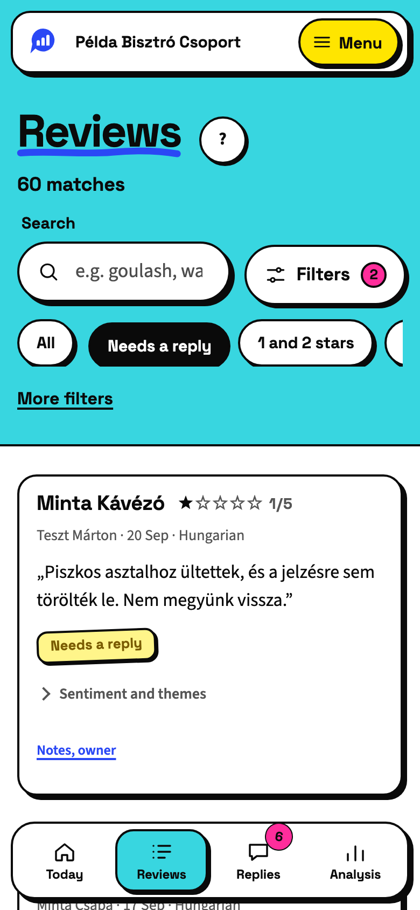

Searching and filtering your reviews
The Reviews tab shows every review we downloaded, newest first. At the top you find a search field and a few quick filters.
Search
Type a word in the search field, for example “goulash” or “waiter”. We search the text of the reviews.
Quick filters
- All: takes every filter off.
- Needs a reply: reviews of three stars or fewer that we do not see a reply to yet.
- 1 and 2 stars: the worst reviews.
- 5 stars: the best ones.
- All venues: here you pick one venue, if the account has several.
- All sites: here you choose between Google and Tripadvisor, if you connected Tripadvisor.
More filters
Under More filters you can also filter by stars, reply, sentiment and text. You set the order here too: Newest first or Lowest rating first. The number of matches stands above the list.

A review's card
- The stars, the guest's name, the time and the language.
- The analysis: the sentiment, at most two themes and the staff named.
- A New mark if it arrived since your last visit.
- Whether it has a reply yet, and a link that opens the review on Google or on Tripadvisor.
Notes and who handles it
The Notes, owner link under the review opens the team's own part.
In the Assigned to field, you choose which colleague handles it.
Under Internal notes, you write what you know about the case, and save it with the Add button.
Only the team sees the notes, never the guest. Colleagues with the viewer role can only read them.
Did this article help?
Can't find what you need? Write to us. We answer in Hungarian and English.
Write to usUpdated: 26 September 2026